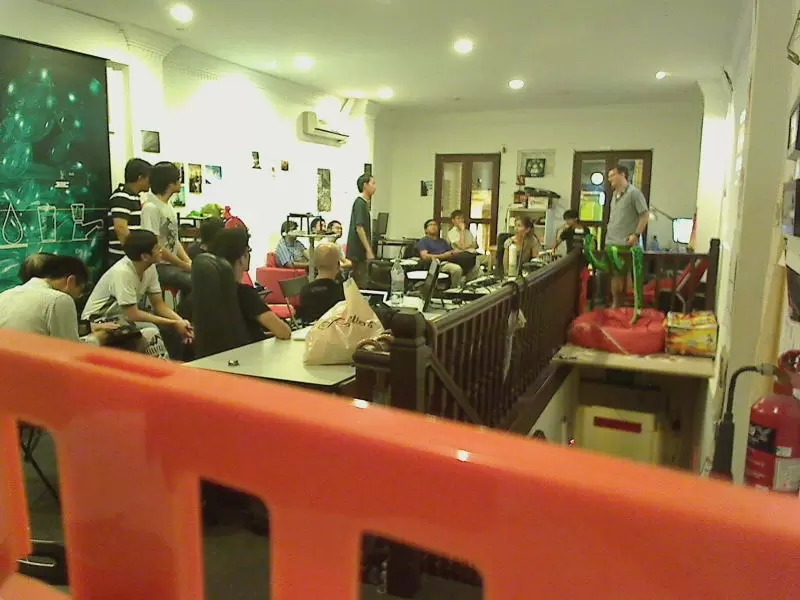

Dude, it was awesome, you totally missed out:
Kai Hendry described how he and Adnan Jaludin rigged up a Raspberry Pi to log the temperature of the Hackerspace. There are graphs! There is also code.
Yours Truly demoed a tiny parser he wrote to load Kindle clipping files into Mnemosyne, so he doesn't forget specifics of the books he reads.
Ted Chen described an audio steganography project; he and his team embedded a VLF beacon into a music file. Kind of like how Lucius Fox mapped Gotham in The Dark Knight (2008)?!?! An earlier demo is here.
Melvin Zhang talked about a collection of AI programs he's developed to play Magic: The Gathering. You should check out Magarena.
Shaun Martin walked through two very different programs to print the Fibonnaci sequence in Haskell. Stuff's mind-blowing.
Chinmay Pendharkar gave us a brief introduction to the Web Audio API. His complete slides are here, but we only had time for a compressed version of that.
Lim Chee Aun returned to give us a progress report on his Bus Route Explorer, a web application to view the routes of Singapore's bus services. You should play with it, it is the best thing.
Phil Mockridge explained that his customers can pay for lessons with Bitcoin, which is pretty cool I guess?!?
There's always next time..
<3,
